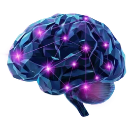

Cartão de vidro
Camada translúcida com desfoque, borda clara e sombra suave.
Kit visual dos apps Psicothica: tokens, fontes locais, cabeçalho, rodapé e armazenamento por app. Esta página usa os mesmos blocos que os apps copiam. Nenhuma requisição a domínio externo.
Acima, o cabeçalho completo (página aberta direto). Abaixo, o modo embutido: a mesma página dentro de um iframe, como no AyAClin. Ele muda sozinho, antes da primeira pintura.
Base escura #0f142a, destaque claro #e1eefc. Ao lado de cada cor, o que é permitido para texto (WCAG; detalhes em docs/contraste.md).
base#0f142a
fundo
destaque#e1eefc
texto: AAA
índigo#130169
só fundo/borda
orquídea#ce57df
texto: só na base; grande nos demais
magenta-violeta#b104dc
só fundo/brilho
ciano#02bbff
texto: AA
céu#82e5ff
texto: AAA
lavanda#ec9eff
texto: AA+
Respiro claro: papel e cinzas. Sobre fundo claro o violeta passa AA e o índigo passa AAA:
#0f142a--psi-grad-1
#422774 → #5c8fe3
--psi-grad-2
#980ded → #02295b
--psi-grad-3
#6b05b2 → #0e0080
--psi-grad-4
#d738d2 → #68a1ed
--psi-grad-5
#01366d → #050040
--psi-grad-6
#04223d → #0f142a (fundo)
Seis fontes OFL (Tektur 900, Shrikhand, Amatic SC, Allison, JetBrains Mono, Plus Jakarta Sans), servidas de fonts/ (WOFF2, latin + latin-ext). Acentuação: ação, coração, órfã, ÀÉÎÕÜ.
Magenta/orquídea de um lado, ciano do outro, mais um halo suave dos dois. Três intensidades, para caixas (box-shadow) e para texto (text-shadow). Estático: com movimento reduzido nada pulsa, o brilho fica.
--psi-neon-sm · --psi-neon-text-sm--psi-neon · --psi-neon-text--psi-neon-lg · --psi-neon-text-lgTrês variações oficiais. Completa (512, 256, 128 px): cabeçalho completo. Círculo (64, 32 px, favicon e apple-touch-icon): cabeçalho compacto, legível pequeno. Cérebro solo (512, 256 px): uso livre (carregamento, marca d'água), não serve como ícone.

Camada translúcida com desfoque, borda clara e sombra suave.
Mais opaco, para destacar uma área dentro de outra.
Neon duplo estático. Só o selo pulsa, e não pulsa com movimento reduzido.
Prefixo psi.<slug>.v1.. O arquivo exportado leva só as chaves deste app; importar valida o app antes de gravar. Teste:
Pronto.
Chaves deste app: … · gravação persistente: …
Sem aviso médico (apps de saúde mental), com aviso médico (apps com conteúdo de saúde física) e com colaborador (o exemplo abaixo é fictício e está rotulado).